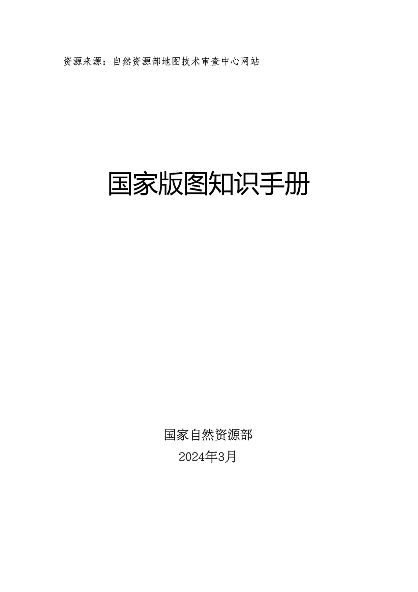

🗺️
美丽中国·版图小达人
全国国家版图知识竞赛备赛助手
📖
🏆
🔊
🌙
🦁
大宝
▾
☁️
未绑定
🎯 做题模式
📚
题库选择：
⭐ 全库精选
🧒 小学组官方样题
🧑 中学组官方样题
📜 历年真题模拟汇编
🏆 2025大赛题库
🗺️ 地图识图专项
🔥 多题库高频题
📝 顺序刷题
⚡ 20题速刷
⏱️ 全真模考
⚔️ 错题消灭战
⭐ 收藏夹
0 / 0
⏱️ 30:00
提交试卷
✓ 0
✗ 0
⬅ 上一题
📑 答题卡
🔍 查手册
下一题 ➡
📑 答题卡与题目跳转
×
已答对
已答错
未答
当前题
📖 自然资源部《国家版图知识手册》（官方39页全彩版）
×
封面/版权
目录索引
第一部分 国家版图定义
第二部分 中国版图范围
中国行政区划
中国领陆与边界
中国海域与领海空间
第三部分 地图表达规范
台湾省表达规范
钓鱼岛及其附属岛屿
南海诸岛与十段线
地图要素与制图六体
第四部分 维护版图尊严
◀ 上一页
第 1 / 39 页
下一页 ▶

点击屏幕任意位置关闭
🏆 挑战成绩单
×
🏆 学情看板与备赛勋章
×
🧒 切换与管理刷题孩子
×
点击头像或卡片即可无缝切换不同孩子，各自独立记录刷题进度、做题结果与错题本：
➕ 登记新孩子
小学组
中学组
选择专属头像：
🦁
🐯
🐼
🦊
🐱
🐶
🚀
🌟
🏆
🎨
🗺️
🎯
确认添加并切换
☁️ 数据方舟 · 跨终端云同步
×
📡
多设备无缝互通
输入相同的家庭同步码，可在手机、平板、电脑间实时互通孩子的做题结果、错题消灭进度与收藏。
家庭同步码 (支持中文、字母、数字)：
保存绑定
🔒 项目隔离保障：本应用自动采用
bc_
项目命名空间隔离，与打卡工具及其他应用数据互不干扰！
🔄 立即双向合并
⬆️ 上传覆盖云端
⬇️ 从云端拉取合并
当前云端状态：
未绑定
上次同步时间：
暂无记录
做题时自动静默同步